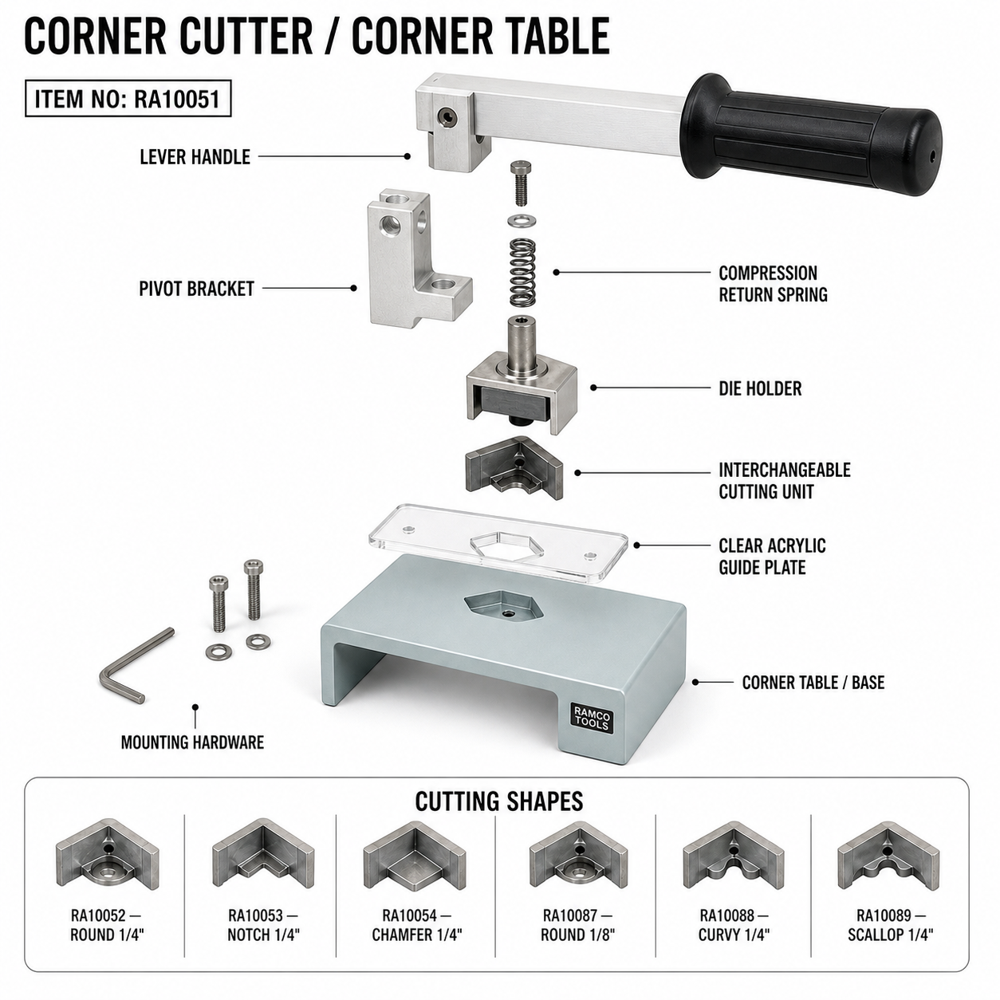

The Cornermate is purpose-built for corner operations. Swap blade cartridges to cut radiused or notched corners — without recalibration. The integrated positioning table guarantees repeatable placement every cut, every time.
Popular with sign shops running high-mix jobs and fabricators doing edge finishing on chromaLuxe, aluminum, and composite panels. The Cornermate Table reduces hand finishing time and delivers the clean geometry your customers expect.
Order Corner BladesThe Corner Cutter Press (RA10051) is a compact benchtop tool designed for precision corner operations. Swap between 6 interchangeable die profiles—no recalibration needed—making it ideal for shops that run multiple corner profiles on the same job.
6 dies included with system:
The Corner Cutter Press works with:
All 6 dies are designed to work interchangeably with the RA10051 press — no special tools or adapters needed. Each die slides into the cutting head holder and is secured with a single M4 grub screw.
Available die profiles: Round (1/4" and 1/8"), Notch, Chamfer (45°), Curvy S-curve, and Scallop.
See our Corner Blades page for die ordering and replacement options.

Upgrade your Cornermate with precision corner blades for radius and notch cutting. See our full blade range.